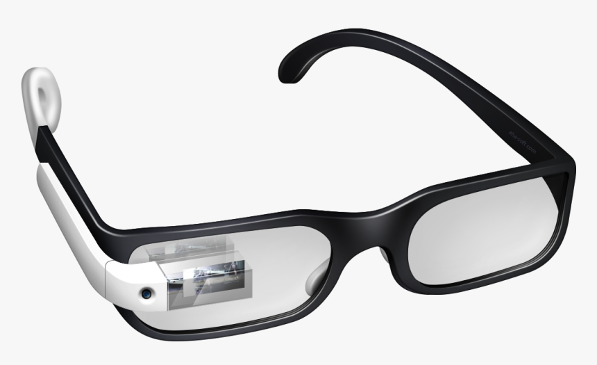

Google Glass
A revolução do Google está chegando
Tecnologia > Inovações
Saiba tudo sobre o Google Glass
por Carlos Alberto
Atualizado em 28/04/2020
O que é
O Google Glass é um acessório em forma de óculos que possibilita a interação dos usuários com diversos conteúdos em realidade aumentada.Também chamado de Project Glass, o eletrônico é capaz de tirar fotos a partir de comando de voz, enviar mensagens instantâneas e realizar vídeoconferências. Seu lançamneto foi no ano de 2014, e seu preço na época era de US$ 1.500,00. Atualmente o Google Glass encontra-se em qualquer parte do mundo.

Google Glass
Uma nova maneira de ver o mundo.
Especificações Técnicas
Tabela Técnica do Google Glass Mar/2013 Tela: Resolução equivalente a tela de 25" Camera: 5MP para fotos / 720p para vídeos Conectividade: Wi-Fi / Bluetooth Interna: 12GB
Como funciona
Os óculos contam com uma pequena tela de LCD ou AMOLED na parte superior e em frente aos olhos do usuário. Com o uso de uma câmera e GPS, você pode se situar, assim como selecionar opções com o movimento da cabeça.
O que você pode fazer com o Google Glass
O vídeo de divulgação do Google mostra que você pode se transformar em uma espécie de "super-humano", já que o aparelho pode indicar a quantos metros você está de seu destino, se o metrô está aberto ou fechado, mostrar o clima, agenda e até permitir que você marque encontros apenas com comando de voz.